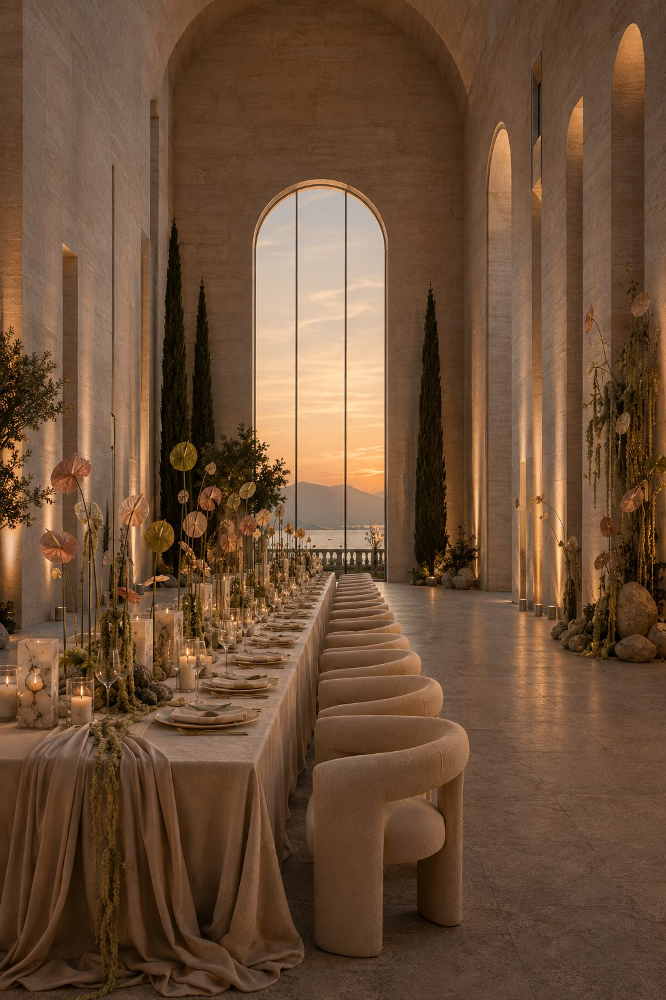
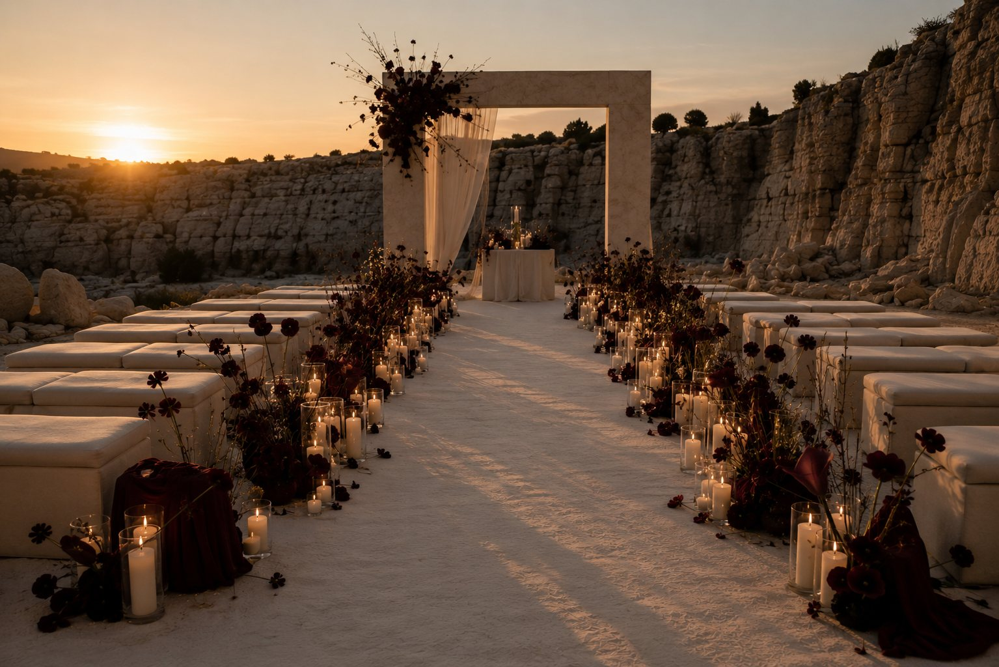
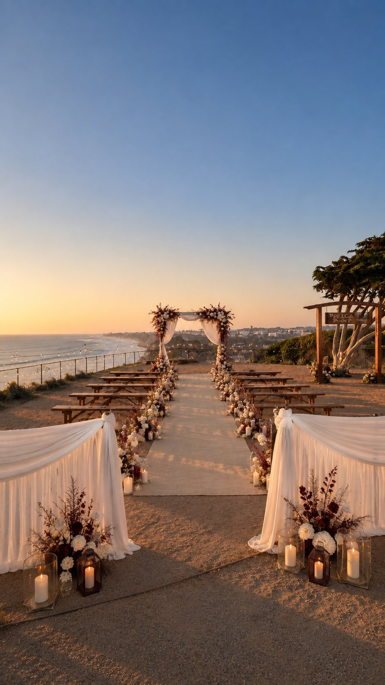
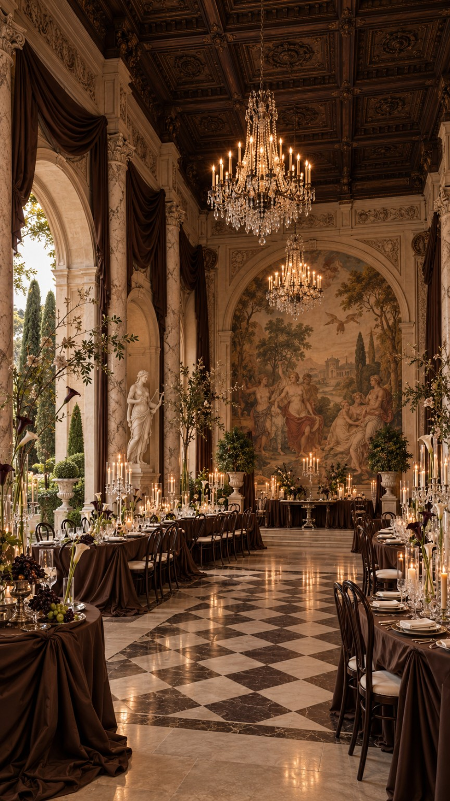
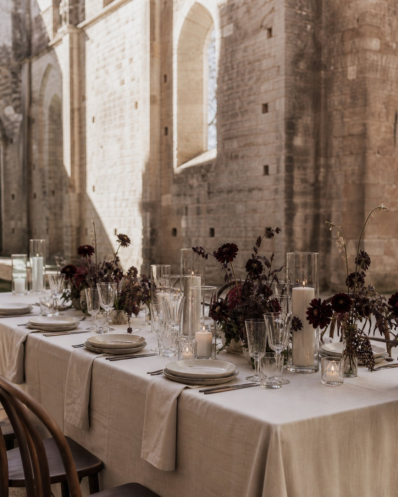

INTERNATIONAL WEDDING DESIGN ATELIER
CREATIVE DIRECTION & SPATIAL DESIGN
Where
architecture
meets emotion.
Extraordinary celebrations begin with a sense of place. We create considered wedding design directions, built around the architecture, atmosphere and individuality of each setting.
Enter the atelier
01 / The point of view
Design that belongs to a place.
We begin with space, not decoration. A setting's proportions, natural light, textures and character guide the creative direction — creating a wedding that feels intentional, personal and impossible to replicate elsewhere.
About the studio
Burgundy Canyon
Luminous Hall

Pelican Hour
The images above are original Lia Armonía creative visualisations, not photographs of completed weddings or bookable venues.
A celebration should never simply fill a space. It should belong to it.

02 / Introducing The Venue Collection
Some places are worth travelling for.
Discover our approach to remarkable European wedding spaces. A carefully selected collection is in development, guided by architecture, atmosphere and genuine suitability for a celebration.
Explore the previewVenue profiles and direct partner enquiries will be added after approval.

03 / The founder
An atelier with a personal vision.
Founded by Diana Ponomarew, LIA ARMONÍA brings an architectural lens to wedding design, visual storytelling and the translation of ideas into cohesive creative direction.
Discover our story04 / Working together
The ways we create.
From an intimate visual direction to a complete wedding design language, each collaboration is guided by its setting and its people.
01 / Private Clients
Wedding
Design
Creative direction, spatial concepts and venue-specific visualisation for extraordinary celebrations.
02 / Digital Atelier
Design
Experiences
Thoughtfully crafted digital design editions, venue visualisations and cinematic wedding experiences.